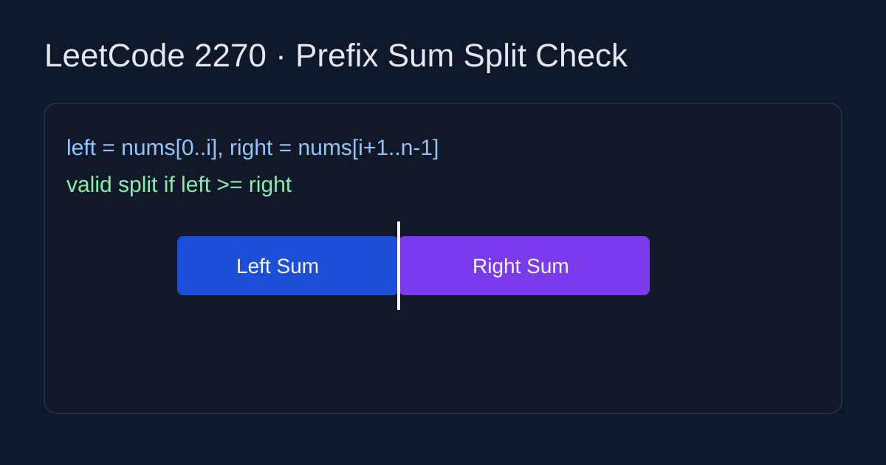

LeetCode 2270: Number of Ways to Split Array (Prefix Sum)
Source: https://leetcode.com/problems/number-of-ways-to-split-array/

English
Keep a running left sum and compute right sum as total - left. For every split point i from 0 to n-2, if left >= right, that split is valid. This gives a linear-time solution.
class Solution {
public int waysToSplitArray(int[] nums) {
long total = 0;
for (int x : nums) total += x;
long left = 0;
int ans = 0;
for (int i = 0; i < nums.length - 1; i++) {
left += nums[i];
if (left >= total - left) ans++;
}
return ans;
}
}class Solution:
def waysToSplitArray(self, nums: list[int]) -> int:
total = sum(nums)
left = 0
ans = 0
for i in range(len(nums) - 1):
left += nums[i]
if left >= total - left:
ans += 1
return ans中文
维护左侧前缀和 left，右侧和等于 total - left。枚举分割点 i（0..n-2），如果 left >= right 则该分割有效，答案加一。时间复杂度 O(n)。
class Solution {
public int waysToSplitArray(int[] nums) {
long total = 0;
for (int x : nums) total += x;
long left = 0;
int ans = 0;
for (int i = 0; i < nums.length - 1; i++) {
left += nums[i];
if (left >= total - left) ans++;
}
return ans;
}
}class Solution:
def waysToSplitArray(self, nums: list[int]) -> int:
total = sum(nums)
left = 0
ans = 0
for i in range(len(nums) - 1):
left += nums[i]
if left >= total - left:
ans += 1
return ans
Comments